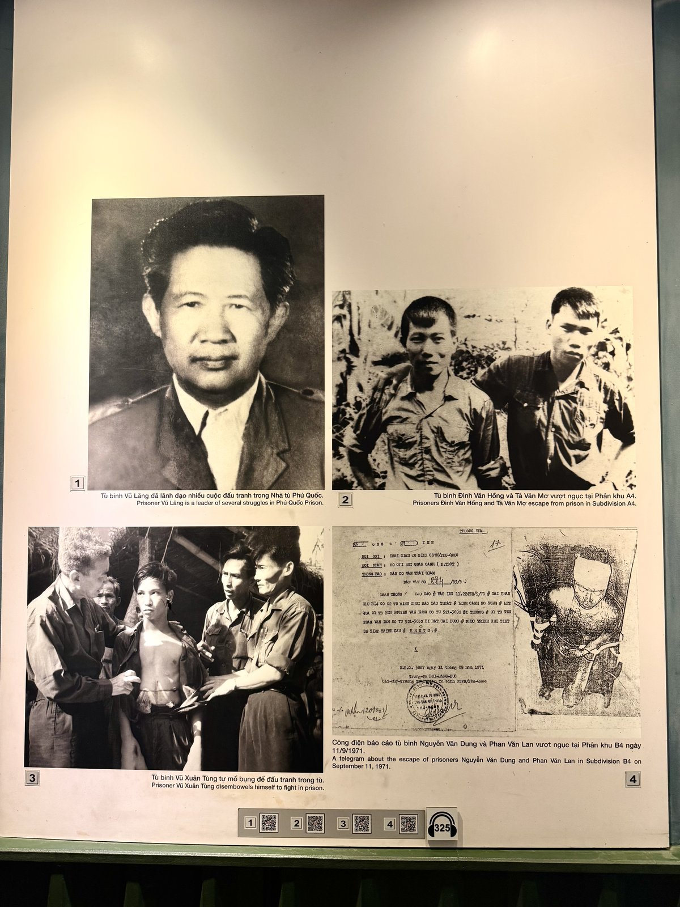

Chứng tích & Liên hệ Quốc tế
Lồng ghép tư liệu Bảo tàng Chứng tích Chiến tranh (28 Võ Văn Tần, Q.3, TP.HCM)
Chính quyền Dân chủ Nhân dân non trẻ & Mở đầu Kháng chiến Nam Bộ:
Bảo tàng lưu giữ cụm ảnh tư liệu Chủ tịch Hồ Chí Minh đọc Tuyên ngôn Độc lập ngày 2/9/1945 tại Ba Đình, cuộc Tổng tuyển cử bầu Quốc hội Khóa I (6/1/1946) và Chính phủ Lâm thời nước Việt Nam Dân chủ Cộng hòa — khẳng định tính hợp hiến, hợp pháp và ý chí sắt đá của một quốc gia độc lập.
Ngay sau đó, ngày 23/9/1945, quân Pháp nổ súng đánh úp Sài Gòn mở đầu cuộc xâm lăng lần thứ hai. Hiện vật trưng bày khắc họa sự đối lập sâu sắc: Một bên là quân viễn chinh trang bị xe thiết giáp, đại bác tối tân; một bên là các đội tự vệ cảm tử Sài Gòn – Chợ Lớn với gậy tầm vông vạt nhọn, súng kíp thô sơ nhưng rực lửa lời thề: "Thà chết tự do còn hơn sống nô lệ!".


Phong trào đấu tranh chính trị đô thị Sài Gòn – Chợ Lớn (1950):
Tư liệu về cuộc bãi khóa ngày 9/1/1950 của hơn 2.000 học sinh, sinh viên trường Pétrus Ký, Gia Long... đòi thả các bạn bị bắt, đòi mở lại trường học.
Thực dân Pháp đàn áp dã man khiến anh học sinh 19 tuổi Trần Văn Ơn hy sinh anh dũng. Đám tang Trần Văn Ơn ngày 12/1/1950 biến thành cuộc biểu tình khổng lồ của hơn 5 vạn người dân Sài Gòn; ngày 9/1 từ đó được chọn làm Ngày truyền thống Học sinh - Sinh viên Việt Nam.
Tiếp đó, ngày 19/3/1950, hơn 50 vạn đồng bào Sài Gòn – Chợ Lớn dưới sự dẫn đầu của Luật sư Nguyễn Hữu Thọ đã xuống đường rầm rộ phản đối 2 tàu chiến Mỹ (Anderson và Stickell) cập cảng Sài Gòn can thiệp quân sự, buộc tàu chiến Mỹ phải nhổ neo rút lui. Ngày 19/3 trở thành Ngày Toàn quốc chống Mỹ đầu tiên của nhân dân ta.


Chiến thắng Điện Biên Phủ & Hiệp định Giơnevơ (1954):
Bảo tàng trưng bày cụm ảnh tư liệu độc bản: cảnh bộ đội ta kéo pháo bằng tay vượt đèo dốc hiểm trở trong chiến dịch Điện Biên Phủ;
hình ảnh cờ "Quyết chiến Quyết thắng" tung bay trên nóc hầm tướng De Castries lúc 17h30 ngày 7/5/1954;
và hình ảnh đoàn tù binh hơn 10.000 lính Pháp cúi đầu bước ra hàng.
Đặc biệt, bảng tư liệu ảnh gốc ghi lại khoảnh khắc: Hội nghị Giơnevơ (21/7/1954) và ngày 16/5/1955 đơn vị cuối cùng của lực lượng viễn chinh Pháp xuống tàu về nước, kết thúc hoàn toàn sự thống trị thuộc địa gần 100 năm của thực dân Pháp ở Việt Nam.


Góc nhìn & Liên hệ Quốc tế sâu sắc
Thắng lợi của Cách mạng Trung Quốc (1/10/1949) & Sự ủng hộ của phe XHCN:
Ngày 1/10/1949, nước Cộng hòa Nhân dân Trung Hoa ra đời dưới sự lãnh đạo của Đảng Cộng sản Trung Quốc.
Sự kiện này đã nối liền Việt Nam với hậu phương xã hội chủ nghĩa rộng lớn.
Đầu năm 1950, Trung Quốc (18/1/1950), Liên Xô (30/1/1950) cùng các nước Đông Âu xã hội chủ nghĩa lần lượt công nhận và thiết lập quan hệ ngoại giao chính thức với Chính phủ Việt Nam Dân chủ Cộng hòa.
Đây là thắng lợi ngoại giao mang tính bước ngoặt, phá tan hoàn toàn thế bao vây cô lập quốc tế của chủ nghĩa đế quốc, tạo nguồn viện trợ to lớn về vũ khí, khí tài và kinh nghiệm quân sự cho quân dân ta.
Khối liên minh chiến đấu Việt – Miên – Lào:
Quán triệt nguyên tắc "Đông Dương là một chiến trường", tháng 3/1951, Hội nghị liên minh nhân dân ba nước Việt Nam - Campuchia - Lào được tổ chức, thành lập Liên minh Việt – Miên – Lào trên nguyên tắc tự nguyện, bình đẳng và tương trợ lẫn nhau.
Đại hội II của Đảng (1951) đã quyết định giúp đỡ cách mạng Lào và Campuchia thành lập các chính đảng macxit độc lập phù hợp với thực tiễn mỗi nước, xây dựng liên minh kháng chiến bền chặt đánh bại âm mưu chia rẽ của chủ nghĩa thực dân.
Ý nghĩa thời đại làm sụp đổ chủ nghĩa thực dân cũ:
Chiến thắng Điện Biên Phủ năm 1954 là lần đầu tiên trong lịch sử nhân loại, quân đội của một nước thuộc địa nhỏ bé, kinh tế nông nghiệp lạc hậu đã đánh bại quân đội viễn chinh thiện chiến của một cường quốc đế quốc phương Tây được siêu cường Mỹ viện trợ tối đa.
Chiến thắng này đã giáng đòn chí mạng mở màn cho sự sụp đổ dây chuyền của hệ thống thuộc địa kiểu cũ trên toàn cầu, thức tỉnh và cổ vũ mạnh mẽ phong trào giải phóng dân tộc ở châu Á, châu Phi và Mỹ Latinh, tiêu biểu là cuộc khởi nghĩa vũ trang của nhân dân Algeria nổ ra ngày 1/11/1954 và phong trào giải phóng 17 nước châu Phi năm 1960 ("Năm châu Phi").